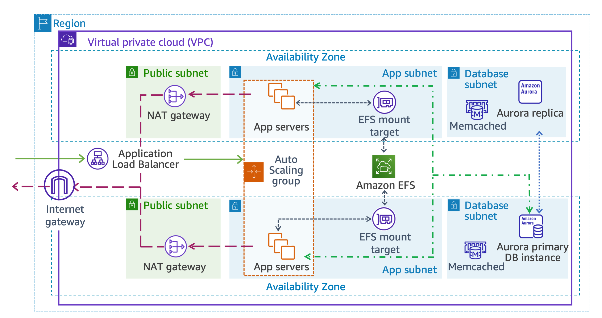

JJTech Model Batch GROUP 2
CustomThread Highly Available Website Project
Highly Available Web App Solutions Architecture

Highly Available Web App Solutions Architecture (Option B)

Our Steps are:
- Create a VPC and all the network infrastructure: Internet Gateway (IGW), public subnets, Appserver subnets, Database subnets, route tables, and security groups.
- Launch an AWS Aurora DB cluster with multi-AZ replication for high availability.
- Integrate ElastiCache for improved performance and caching.
- Provision an Elastic File System (EFS) for shared storage across EC2 instances.
- Create an Application Load Balancer (ALB) and configure a target group for load distribution.
- Configure an Auto Scaling Group (ASG) with a launch template to automatically scale EC2 instances. Include user data to automate WordPress setup.
- Deploy EC2 instances through the ASG for application hosting.
- Implement CloudFront for global content caching and SSL termination.
- Set up Route 53 for DNS management and traffic routing.
- Configure a failover policy to an S3 static website in case of primary site failure.